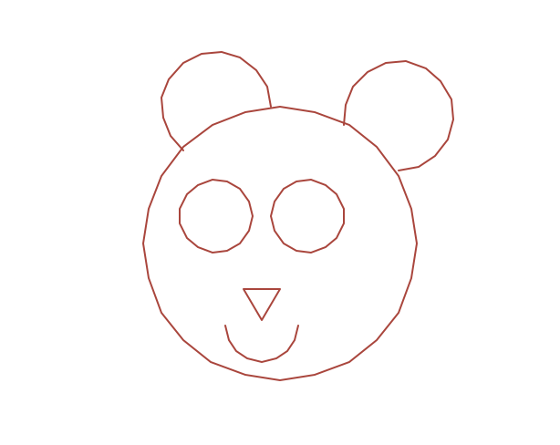

Homework Tasks for the Turtle Topic
Table of Contents
Grey overlay
Pink
Green
Blue
Cream
Liliac
Purple
Yellow
1 Homework 1 - Quiz with If Statement
Quiz It
- Run the code below to see what happens. Be sure to input your answer on the right bottom window.
- After running the code, have a look at the code and try to understand how it works.
- Your homework task:
- add another quiz question under the last line of comment (starting with a #)
- ask user for an answer and store it in a variable
- use another if statement to check if the answer is correct
- output appropriate messages depending on the answer is correct or not
- test your quiz by answer both questions
- screen shot your code and upload to www.bournetolearn.com
2 Homework 2 - Half Moon Rising:
Learn It
I feel like we're going in circles!
- Let's learn about circles!
- The Turtle library has a built-in function for making a circle!
- We can call this function by typing turtle.circle()
- Circles are a very useful tool!
- Look at the example below for more tips on how to draw circles
Try It
Think it, Trinket!
<iframe src="https://trinket.io/embed/python/fd97e2dc6b" width="100%" height="600" frameborder="0" marginwidth="0" marginheight="0" allowfullscreen></iframe>
- Try editing the code to draw another smaller circle underneath (75)
- Remember which direction to face to draw it down
- Try drawing another small circle in the middle of the bigger ones
- Remember to use penup() and pendown() to move without drawing a line!
Your homework:
- The code below gives you some code to draw one half circle
- You need to define a function called halfMoon()
- You then need to call the halfMoon function in a loop to create the following pattern.
<img src="./img/halfMoons.png" width=200 height=180> <iframe src="https://trinket.io/embed/python/cfef48097a" style="min-width:900px;" height="400" frameborder="0" marginwidth="0" marginheight="0" allowfullscreen></iframe>
3 Homework 3 - Bearly work:
Code It
- Now that you've mastered the circle function in the previous homework, how about using this to draw some faces!
- See if you can create a bear face like the one I created below!
- Remember to use the:
- Circle function (with radius and extent)
- Triangle function that you made in previous lessons
- The turtle.penup() and turtle.pendown() functions
- Tip: Create a new function called DrawABear(): and put the code in there!

<iframe src="https://trinket.io/embed/python/3eba2638d1" width="100%" height="600" frameborder="0" marginwidth="0" marginheight="0" allowfullscreen></iframe>
- Great! Now we can add some detail!
- Try adding pupils and an inner part to the bear's ears
- Remember to use a different colour!